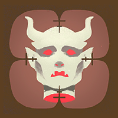

Helden › Mystiker
Lady Geist
Lady Geist ist ein spielbarer Held in Deadlock. Einst der Toast der Stadt, erkaufte sich Jeanne Geist ihre Jugend mit einem Pakt: Sie zehrt vom Leben anderer. Im Kampf opfert sie die eigene Gesundheit — und saugt sie sich mit Zins und Zinseszins zurück.
Hintergrund
Einst war Lady Jeanne Geist der Toast der Stadt. Doch die Zeit verging, ihre Schönheit verblasste, und sie entfernte sich immer weiter von den glorreichen Tagen der High Society — bis sie schließlich nur noch eine gebrechliche Frau im Pflegeheim war, die Geschichten einer glanzvollen Vergangenheit erzählte. Genau dann offenbarte sich Oathkeeper: ein mächtiger Geist von einer anderen Ebene, der ihr einen Weg zurück anbot. Er könne ihre Jugend wiederherstellen — sie müsse nur die Essenz der Lebenden abschöpfen, um sich zu erhalten.
Geist war hin- und hergerissen. Mord war offenkundig ein schauriges Geschäft, und Oathkeeper zweifellos kein Wesen, dem man trauen konnte. Aber die Aussicht auf eine zweite Jugend war zu verlockend. Also schmiedete sie einen Plan: Nach dem Pakt band und bannte sie Oathkeeper, um seinen Einfluss auf sie zu begrenzen. Gefüttert würde er — aber zu ihren Bedingungen, nicht zu seinen.
Doch aus Jahren wurden Jahrzehnte, der Bann wird schwächer … und Oathkeeper hungert stärker denn je.
Spielstil
Die eigene Gesundheit für verheerende Effekte auszugeben ist die Quelle von Lady Geists Macht. Geht ihr das Leben aus, saugt sie es einfach aus ihren Rivalen zurück — bis hin zum kompletten Tausch der Lebensbalken.
Fähigkeiten
Essence Bomb
Taste 1Opfert eigene Gesundheit für eine Essenzbombe, die nach kurzer Schärfzeit kräftigen Schaden anrichtet.
Abklingzeit: 14 s
Life Drain
Taste 2Bindet ein Ziel mit einem Energieband und saugt dessen Lebenskraft ab, um sich selbst zu heilen.
Abklingzeit: 34 s
Malice
Taste 3Verschießt Blutscherben, die stapelnd verlangsamen und den vom Opfer erlittenen Schaden erhöhen — auf Kosten eigener Gesundheit.
Abklingzeit: 6 s
Soul Exchange
Taste 4 UltimateTauscht den Gesundheitsstand mit einem gegnerischen Helden — der ultimative Rettungsanker.
Abklingzeit: 220 s
Basiswerte
| Wert | Basis (Stufe 1) | Kategorie |
|---|---|---|
| Maximale Gesundheit | 880 | Vitalität |
| Gesundheitsregeneration | 1 / s | Vitalität |
| Lauftempo | 6,3 m/s | Bewegung |
| Sprint-Bonus | +2,4 m/s | Bewegung |
| Ausdauer | 3 | Bewegung |
| Leichter Nahkampfschaden | 50 | Waffe |
| Schwerer Nahkampfschaden | 116 | Waffe |
Beliebte Builds
Diese Daten stammen direkt aus dem Build-Browser im Spiel: die drei meistfavorisierten Builds für Lady Geist, sortiert nach der Zahl der Spieler, die sie gespeichert haben. Klick einen Build an, um die Item-Reihenfolge zu sehen.
№1 Wulfee7 Twitch - BEST LADY GEIST BUILD ( 85% WR ) 209.202 Favoriten
„https://www.twitch.tv/wulfee7“





№2 actually good geist build 48.647 Favoriten
„Building every item in order is fine but especially as you get more comfortable you should buy based on the game and personal preference. The build is made to be accessible to new players but is also very good at "high m…“


№3 actually good geist build 48.392 Favoriten
„Building every item in order is fine but especially as you get more comfortable you should buy based on the game and personal preference. The build is made to be accessible to new players but is also very good at "high m…“
Warum sind das die besten Builds?
Die drei Builds wurden zusammen über 306.241-mal von Spielern gespeichert — Favoriten sind das stärkste Qualitätssignal im Build-Browser, denn ein Build, den so viele Spieler über Monate und Patches hinweg behalten, hat sich in echten Matches bewährt. Die Builds mischen alle drei Kategorien — ein Zeichen dafür, dass Lady Geist flexibel gespielt wird und je nach Matchup Waffe, Überleben oder Fähigkeiten priorisiert. Als Einstieg gilt: Folge der Item-Reihenfolge des №1-Builds Kategorie für Kategorie und passe erst mit wachsender Erfahrung an dein Matchup an.
Trivia
- Lady Geists interner Klassenname in den Spieldaten lautet
hero_ghost. - Die Spieldaten führen den Helden mit den Tags Lifesteal, Self Damage, Fatale.
- Die Einstiegskomplexität liegt bei 2 von 3 — Kategorie „Fortgeschritten“.